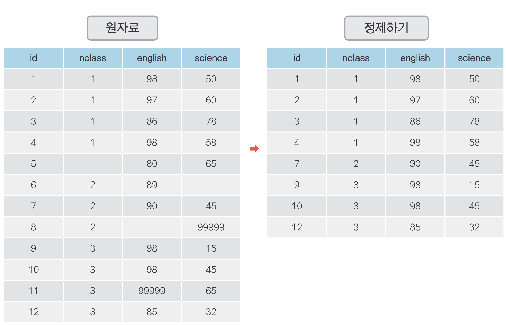
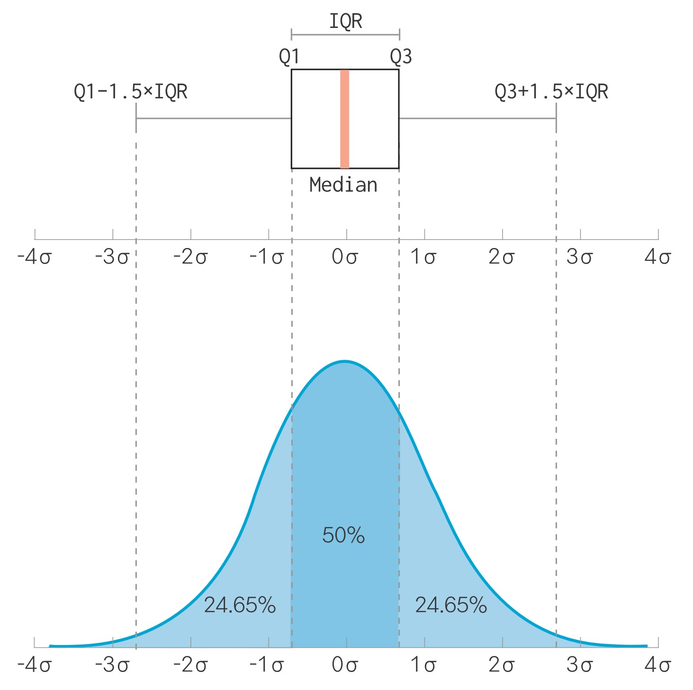
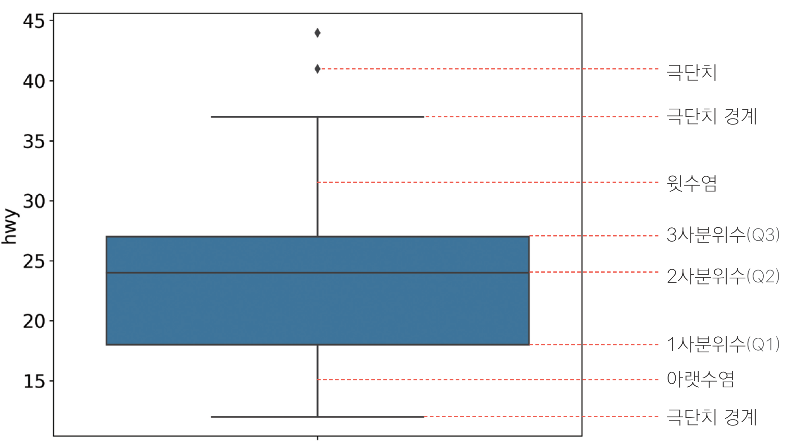
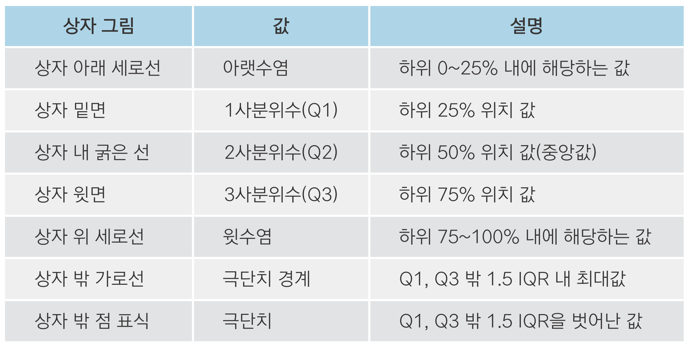

import pandas as pd
import numpy as np
df = pd.DataFrame({'sex' : ['M', 'F', np.nan, 'M', 'F'],
'score' : [5, 4, 3, 4, np.nan]})
df sex score
0 M 5.0
1 F 4.0
2 NaN 3.0
3 M 4.0
4 F NaN

07-1 빠진 데이터를 찾아라! - 결측치 정제하기(link)
07-2 이상한 데이터를 찾아라! - 이상치 정제하기(link)
NumPy 패키지의 np.nan 입력NaN으로 표시NaN이 됨NaN 있는 상태로 연산하면 출력 결과도 NaNdf.dropna()에 아무 변수도 지정하지 않음결측치 제거하지 않고 분석하기
pd.mean(), pd.sum()은 결측치 있으면 자동으로 제거하고 연산함groupby(), agg()도 결측치 제거하고 연산함 mean_score sum_score
sex
F 4.0 4.0
M 4.5 9.0df.dropna()로 명시적으로 제거 권장 id nclass math english science
0 1 1 50.0 98 50
1 2 1 60.0 97 60
2 3 1 NaN 86 78
3 4 1 30.0 98 58
4 5 2 25.0 80 65
5 6 2 50.0 89 98
6 7 2 80.0 90 45
7 8 2 NaN 78 25
8 9 3 20.0 98 15
9 10 3 50.0 98 45
10 11 3 65.0 65 65
11 12 3 45.0 85 32
12 13 4 46.0 98 65
13 14 4 48.0 87 12
14 15 4 NaN 56 78
15 16 4 58.0 98 65
16 17 5 65.0 68 98
17 18 5 80.0 78 90
18 19 5 89.0 68 87
19 20 5 78.0 83 58df.fillna()로 결측치를 평균값으로 대체하기 id nclass math english science
0 1 1 50.0 98 50
1 2 1 60.0 97 60
2 3 1 55.0 86 78
3 4 1 30.0 98 58
4 5 2 25.0 80 65
5 6 2 50.0 89 98
6 7 2 80.0 90 45
7 8 2 55.0 78 25
8 9 3 20.0 98 15
9 10 3 50.0 98 45
10 11 3 65.0 65 65
11 12 3 45.0 85 32
12 13 4 46.0 98 65
13 14 4 48.0 87 12
14 15 4 55.0 56 78
15 16 4 58.0 98 65
16 17 5 65.0 68 98
17 18 5 80.0 78 90
18 19 5 89.0 68 87
19 20 5 78.0 83 58df.fillna()로 결측치를 평균값으로 대체하기결측치가 들어 있는 mpg 데이터를 이용해 분석 문제를 해결해 보세요.
mpg 데이터 원본에는 결측치가 없습니다. 우선 mpg 데이터를 불러와 일부러 몇 개의 값을 결측치로
만들겠습니다. 다음 코드를 실행하면 다섯 행의 hwy 변수에 NaN을 할당합니다.
Q1. drv(구동 방식)별로 hwy(고속도로 연비) 평균이 어떻게 다른지 알아보려고 합니다. 분석을 하기
전에 우선 두 변수에 결측치가 있는지 확인해야 합니다. drv 변수와 hwy 변수에 결측치가 몇 개
있는지 알아보세요.
Q2. df.dropna()를 이용해 hwy 변수의 결측치를 제거하고, 어떤 구동 방식의 hwy 평균이 높은지
알아보세요. 하나의 pandas 구문으로 만들어야 합니다.
Q1. drv(구동 방식)별로 hwy(고속도로 연비) 평균이 어떻게 다른지 알아보려고 합니다. 분석을 하기
전에 우선 두 변수에 결측치가 있는지 확인해야 합니다. drv 변수와 hwy 변수에 결측치가 몇 개
있는지 알아보세요.
Q2. df.dropna()를 이용해 hwy 변수의 결측치를 제거하고, 어떤 구동 방식의 hwy 평균이 높은지
알아보세요. 하나의 pandas 구문으로 만들어야 합니다.
NaN으로 변환NaN 부여NaN 부여 np.where()는 문자와 NaN을 함께 반환할 수 없습니다.
np.where() 사용할 때 반환 값 중 문자가 있으면 np.nan 지정해도 문자 'nan' 반환False로 나타남
변수를 문자와 NaN으로 함께 구성하는 방법
df.replace()를 이용해 결측치로 만들 문자를 np.nan으로 바꾸기


• IQR(사분위 범위): 1사분위수와 3사분위수의 거리
(1) 1사분위수, 3사분위수 구하기
(2) IQR 구하기
(3) 하한, 상한 구하기
이상치가 들어 있는 mpg 데이터를 이용해 분석 문제를 해결해 보세요.
우선 mpg 데이터를 불러와 일부러 이상치를 만들겠습니다. drv(구동 방식) 변수의 값은 4(사륜구동), f(전륜구동), r(후륜구동) 세 종류입니다. 몇 개의 행에 존재할 수 없는 값 k를 할당하겠습니다. cty(도시 연비) 변수도 몇 개의 행에 극단적으로 크거나 작은 값을 할당하겠습니다.
구동 방식별로 도시 연비가 어떻게 다른지 알아보려고 합니다. 분석을 하기 전에 우선 두 변수에
이상치가 있는지 확인하려고 합니다.
Q1. drv에 이상치가 있는지 확인하세요. 이상치를 결측 처리한 다음 이상치가 사라졌는지
확인하세요. 결측 처리를 할 때는 df.isin()을 활용하세요.
Q2. 상자 그림을 이용해 cty에 이상치가 있는지 확인하세요. 상자 그림 기준으로 정상 범위를 벗어난
값을 결측 처리한 다음 다시 상자 그림을 만들어 이상치가 사라졌는지 확인하세요
Q3. 두 변수의 이상치를 결측 처리했으니 이제 분석할 차례입니다. 이상치를 제거한 다음 drv별로
cty 평균이 어떻게 다른지 알아보세요. 하나의 pandas 구문으로 만들어야 합니다.
Q1. drv에 이상치가 있는지 확인하세요. 이상치를 결측 처리한 다음 이상치가 사라졌는지
확인하세요. 결측 처리를 할 때는 df.isin()을 활용하세요.
Q2. 상자 그림을 이용해 cty에 이상치가 있는지 확인하세요. 상자 그림 기준으로 정상 범위를 벗어난
값을 결측 처리한 다음 다시 상자 그림을 만들어 이상치가 사라졌는지 확인하세요
Q2. 상자 그림을 이용해 cty에 이상치가 있는지 확인하세요. 상자 그림 기준으로 정상 범위를 벗어난
값을 결측 처리한 다음 다시 상자 그림을 만들어 이상치가 사라졌는지 확인하세요
Q2. 상자 그림을 이용해 cty에 이상치가 있는지 확인하세요. 상자 그림 기준으로 정상 범위를 벗어난
값을 결측 처리한 다음 다시 상자 그림을 만들어 이상치가 사라졌는지 확인하세요
Q3. 두 변수의 이상치를 결측 처리했으니 이제 분석할 차례입니다. 이상치를 제거한 다음 drv별로
cty 평균이 어떻게 다른지 알아보세요. 하나의 pandas 구문으로 만들어야 합니다.
## 2. 이상치 정제하기
# 이상치 확인
df['sex'].value_counts(sort = False)
# 이상치 결측 처리
df['sex'] = np.where(df['sex'] == 3, np.nan, df['sex'])
# 상자 그림으로 극단치 기준값 찾기
pct25 = mpg['hwy'].quantile(.25) # 1사분위수
pct75 = mpg['hwy'].quantile(.75) # 3사분위수
iqr = pct75 - pct25 # IQR
pct25 - 1.5 * iqr # 하한
pct75 + 1.5 * iqr # 상한
# 극단치 결측 처리
mpg['hwy'] = np.where((mpg['hwy'] < 4.5) | (mpg['hwy'] > 40.5), np.nan, mpg['hwy'])